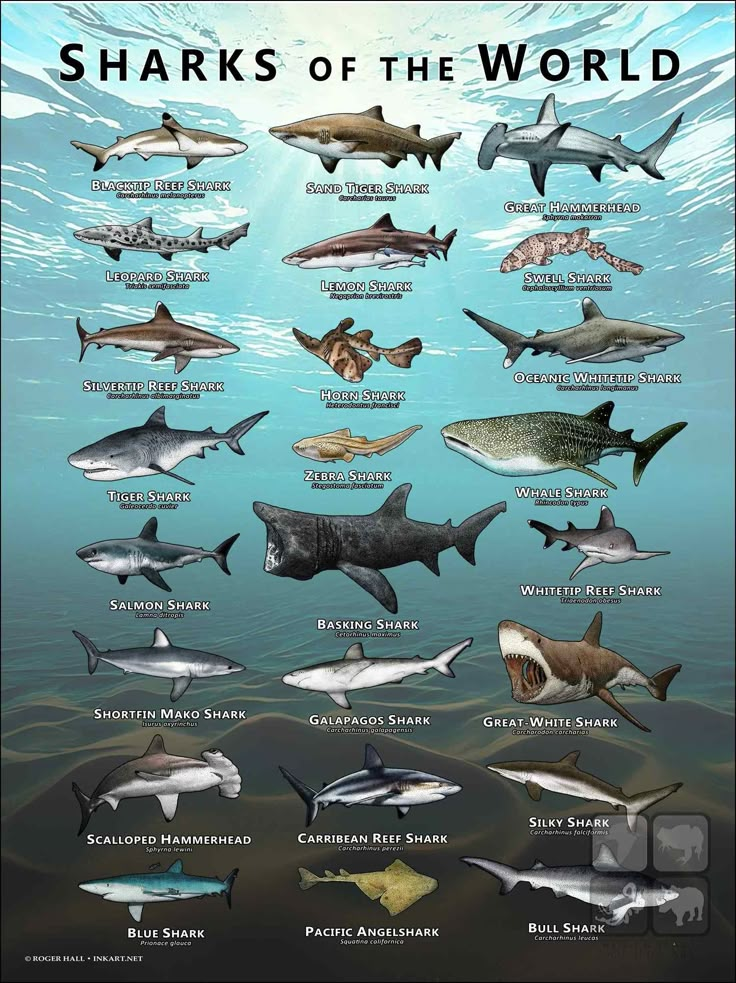
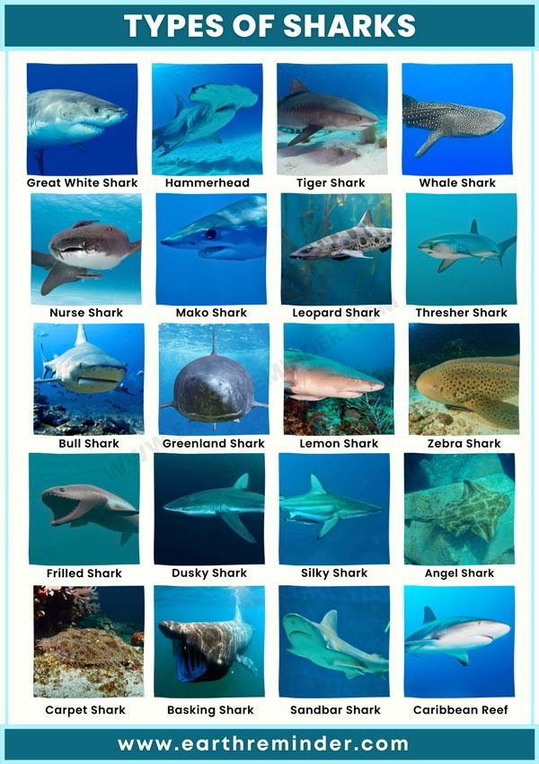

Sharks come in many different sizes, ranging from very small to extremely large. The smallest shark is the dwarf lanternshark, which grows to only about 7–8 inches long. Some sharks, like the blacktip reef shark, grow to around 5 feet long. Larger sharks, such as the great white shark, can grow up to about 20 feet long. The biggest shark in the world is the whale shark, which can reach around 40 feet long or even longer!
Different types of sharks eat different kinds of food depending on their size and where they live. Some sharks, like the great white shark, eat fish, seals, and sea lions. Hammerhead sharks often eat stingrays, squid, and other fish. Whale sharks are the largest sharks in the world, but they eat tiny organisms called plankton, along with small fish and other little sea creatures. Tiger sharks eat many different things, including fish, turtles, and crabs. Some smaller sharks eat shrimp, squid, and shellfish. Even though sharks have different diets, they all play an important role in keeping the ocean ecosystem balanced.

